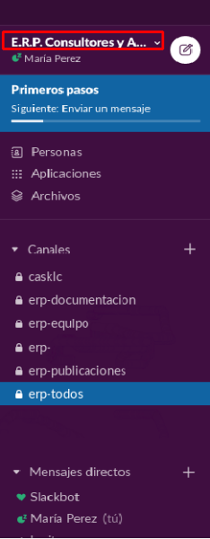
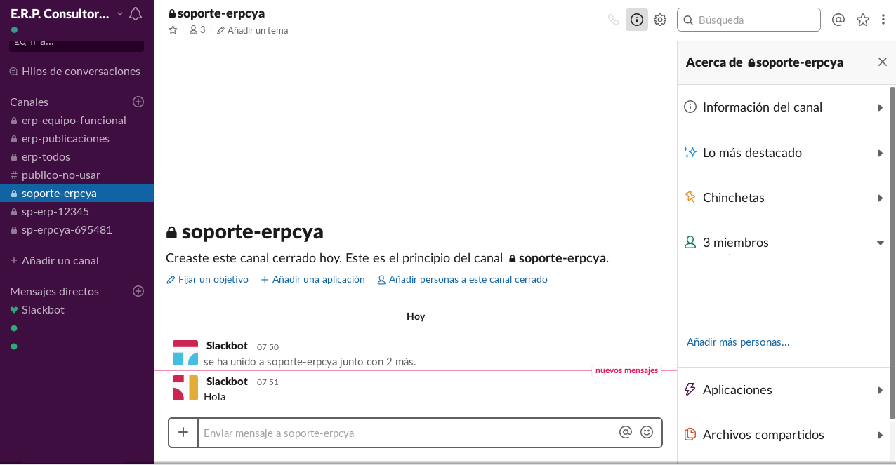

Instalación de Slack¶
Esta herramienta es posible instalarla en “Windows” y “Linux”, por lo que permite que empresas que trabajen con uno o ambos sistemas operativos puedan utilizarla.
Instalación de Slack en Windows
Para los equipos de la empresa que tienen instalado sistema operativo “Windows”, simplemente debe ingresar al siguiente enlace y seguir las intrucciones que en el se indican.
Note
“Slack para Windows”
https://get.slack.help/hc/es/articles/209038037-C%C3%B3mo-descargar-Slack-para-Windows
Instalación de Slack en Linux
Para los equipos de la empresa que tienen instalado sistema operativo “Linux”, simplemente debe ingresar al siguiente enlace y seguir las intrucciones que en el se indican.
Slack como Herramienta de Trabajo en las Empresas¶
La herramienta slack es utilizada en la empresa “ERP Consultores y Asociados” como único medio de comunicación obligatorio entre ellos y las empresas, con la finalidad de brindarles consultoría y soporte inmediato con respecto a ADempiere.
Note
Cualquier duda o inquietud sobre la información incluida en este material, contactar a los consultores de ERP Consultores y Asociados.
Para poder acceder al espacio de trabajo de ERPyA se debe tener una cuenta asociada, para ello primeramente debes contar con una invitación el cual llegará a la cuenta de correo electrónico qué le facilites a los consultores de ERPyA, posterior a ello debes ser miembro de un canal privado de la empresa a la qué pertenezca para qué puedas interactuar bajo el espacio de trabajo de ERPyA.
Note
La invitación es realizada por el equipo de trabajo de ERPyA
Para poder cumplir con los aspectos anteriormente mencionados, a continuación se detalla el paso a paso para poder crear una cuenta y acceder al espacio de trabajo del slack de ERPyA
Crear Cuenta en Slack¶
En la cuenta del correo electrónico llegará un mensaje con la invitación realizada por ERPyA
Al abrir el correo de la invitación aparecerá un mensaje invitandote a unirte al espacio de trabajo, dar click al botón “Únete ahora” para poder crear una cuenta.
Imagen 1. Invitación Slack
Note
Al dar click al botón “Únete ahora” te redireccionará a una nueva pestaña en el navegador en el qué te encuentres trabajando.
Se mostrará la siguiente vista, donde se debe colocar en el campo “Nombre Completo”, el nombre de usuario de la cuenta de slack a manejar, para este caso es el nombre y apellido.
Imagen 2. Crear Cuenta Usuario
Note
Se recomienda colocar como nombre y apellido la inicial de ambos en mayúscula y continuar con minúscula, el nombre qué coloques es el nombre a mostrar en los mensajes que envíes en slack.
Colocar la contraseña en el campo “Contraseña” la cual se utilizará para acceder al slack, esta debe contemplar lo indicado por el slack el cual no puede tener menos de 6 caracteres.
Imagen 3. Crear Cuenta Contraseña
Note
La contraseña a colocar queda a criterio de la persona qué esté creando la cuenta, se recomienda colocar contraseñas fáciles de recordar, y qué la persona suela utilizar comúnmente.
Una vez llenado los campos “Nombre Completo” y “Contraseña” dar click al botón “Crear Cuenta”
Imagen 4. Crear Cuenta botón
Note
Al dar click al botón “Crear Cuenta” te redireccionará al espacio de trabajo de ERPyA


Se mostrará la siguiente vista, donde te dará la bienvenida al espacio de trabajo de ERPyA y una serie de opciones para que te pongas en marcha y al día en la cuenta de Slack
Imagen 5. Inicio de Sesión Bienvenida
Podran observar qué slack cuenta con un pequeño menú del lado izquierdo, donde pueden apreciar lo siguiente:
Imagen 6. Menú Slack
El nombre del espacio de trabajo de slack en el cual se encuentra asociado

Imagen 7. Nombre Espacio Trabajo
El usuario con el que se encuentra trabajando, que es el mismo usuario el cual fue creado
Imagen 8. Nombre Usuario
El estado de actividad de la cuenta “Activo” ó “Ausente”
Imagen 9. Estatus
Canales
Imagen 10. Identificación Canales
Mensajes directos
Imagen 11. Identificación Mensajes
Dentro de la opción “Canales” podrá observar los canales privados el cual va a pertenecer, al posicionarse dentro del canal privado podrá comenzar a interactuar con el equipo de trabajo de ERPyA
Imagen 12. Descripción del Canal


Inicio de Sesión¶
Si deseas conectarte nuavemente al espacio de trabajo de slack de ERPyA, debes realizar los siguientes pasos:
Ingresar en el navegador de tu preferencia la URL donde se encuentra alojado el espacio de trabajo de ERPyA


¡Muy Importante!
Como usuario debes colocar el correo al cual te llego la invitación del Slack
Como contraseña debes colocar la contraseña que utilzaste al momento de crear la cuenta
Note
Te envitamos a que también descargues la aplicación en tu teléfono móvil o en tu equipo a traves de Google Play Store
Gestiones Básicas de la Herramienta Slack¶
En el presente instructivo se pretende explicar la herramienta a fin de que los usuarios puedan entender cada una de sus funciones.
Perfil de Usuario¶
Es donde se encuentran los datos del perfil de usuario que inicio sesión en el espacio de trabajo de slack.
Notificaciones
Es la configuración de las notificaciones que recibe el usuario ya sea por mensajes de canales o mensajes directos.
Ir a…¶
Es un buscador inteligente que posee la herramienta slack donde se puede filtrar la búsqueda por mensajes, archivos y canales.
Imagen 15. Buscador Inteligente de Slack

Hilos de Conversaciones¶
Son las respuestas de los mensajes enviados o recibidos entre los usuarios.
Canales¶
Son grupos creados por ERP Consultores y Asociados para comunicarse entre ellos y los clientes. La información expresada en los canales, sólo pueden ser vistas por los miembros.
Una persona puede ser miembro de un canal sólo si es invitada por otro miembro o si es ella quien crea el canal. En slack se crean los canales a partir de la opción “Añadir un Canal”. A continuación se define el proceso de creación de los canales.
Añadir un Canal¶
Los canales se pueden crear de dos (2) tipos, estos pueden ser públicos o privados. Para crear un canal en slack se debe seleccionar la opción añadir canal, luego indicar el tipo de canal, seguido del nombre y por último se deben seleccionar los miembros que pertenecerán al canal. A continuación se define el comportamiento de los tipos de canales.
Canal Público
El canal público es aquel al que tienen acceso todos los miembros del espacio de trabajo, se diferencia del canal privado por tener del lado izquierdo del nombre, el símbolo #.
Canal Privado
El canal privado es aquel al que tienen acceso algunos de los miembros del espacio de trabajo, se diferencia del canal público por tener del lado izquierdo del nombre un candado.
Imagen 16. Canales Públicos y Privados de Soporte a Empresa en Slack

En ERP Consultores y Asociados esta establecido como estándar de creación de canales los siguientes lineamientos:
Canal de Soporte
Si el canal a crear es de soporte, la primera palabra será soporte, seguido del nombre de la empresa a la cual se le brindará el soporte.

Imagen 17. Canal Privado de Soporte a Empresa en Slack
Canal Interno
Si el canal a crear es interno de ERP Consultores y Asociados las primeras letras serán erp, seguido del tema del canal.
Imagen 18. Canal Privado Interno en Slack

Nombre de los Canales
El nombre de los canales no deben llevar mayúsculas, ni espacios en blanco, por lo tanto se deben separar las palabras con el símbolo guión (-).
Note
“Forma Correcta”
Nombre del canal de soporte: soporte-erpcya
Nombre del canal interno: erp-documentacion
Warning
“Forma Incorrecta”
Nombre del canal de soporte: sp-erpya
Nombre del canal interno: erpcya-documentacion-general
Con la integración que realizó ERP Consultores y Asociados los ticket creados serán privados al igual que los grupos, es decir que sólo podrán visualizarlos y tendrán acceso a ellos los miembros seleccionados.
Canal de Ticket en Slack
Con la nueva actualización, slack permite crear un ticket por medio de un mensaje en un canal de soporte, los miembros de ese canal serán la persona que envia el mensaje y la que crea el ticket desde el mensaje. Por lo tanto, todos los canales de enlace o canales de ticket serán privados.
El nombre de este tipo de canal es generado automaticamente y esta conformado por las letras sp, el nombre de la empresa de la que se presenta la problemática, seguido de una serie de números aleatorios.
Note
El nombre de los canales de ticket no deben llevar mayúsculas, ni espacios en blanco, por lo tanto se separan las palabras con el símbolo guión (-).
A continuación se describe el procedimiento de creación de un Ticket en Slack.
Seleccione el canal creado para el soporte de la empresa.
Imagen 19. Canal de Soporte a Empresa ERP en Slack
Revise y conteste los mensajes recibidos por los miembros del canal.
Imagen 20. Canal de Soporte a Empresa ERP en Slack
Luego realice la petición de la problemática sobre ADempiere durante la conversación..
Imagen 21. Mensajes del canal de Soporte a Empresa ERP en Slack
Si el ticket referente a la misma no ha sido creado, el consultor procede a la creación del ticket correspondiente.
Imagen 22. Ticket de Soporte a Empresa en Slack
Note
Todo lo referente a la problemática correspondiente al ticket creado debe ser expresado por el canal del ticket.


Mensajes Directos¶
Esta opción es utilizada para enviar mensajes entre los miembros del espacio de trabajo.
Warning
“Cómo enviar un mensaje privado?”
Seleccione la opción Mensajes Directos” y introduzca el nombre de la persona a la que desea escribir un mensaje privado, así el mensaje sólo podrá ser visto por usted y esa persona que seleccionó. Finalmente seleccione la opción “Ir”.